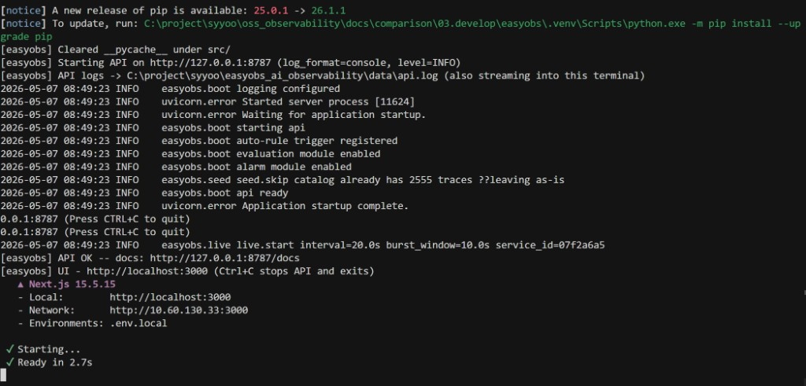
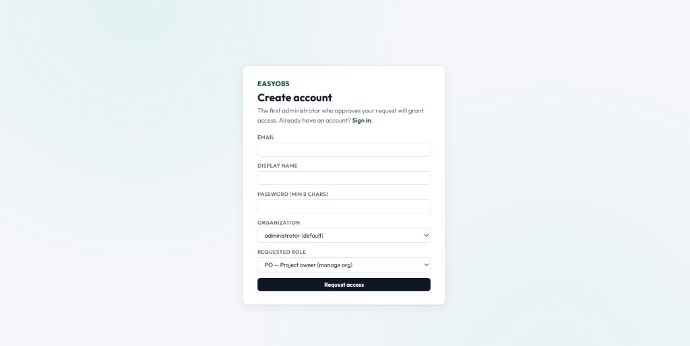
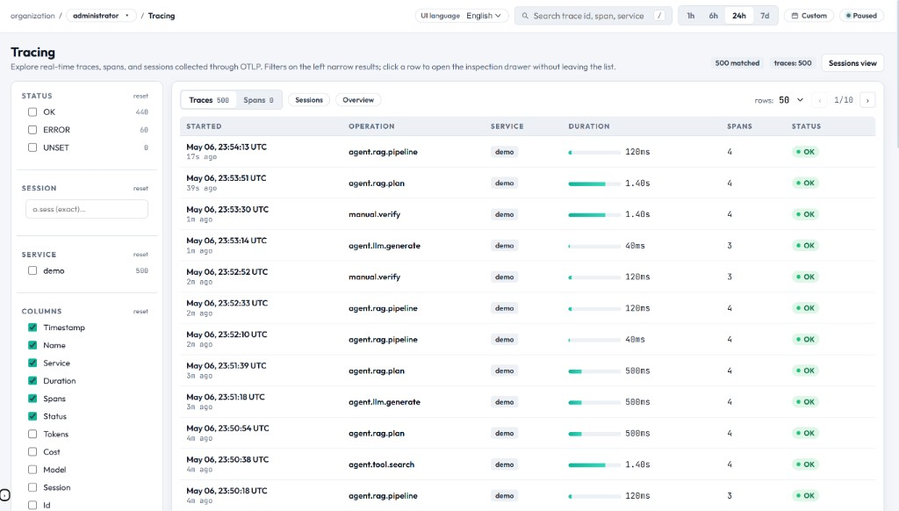

Quickstart
Get EasyObs running locally and send your first trace in under 3 minutes.
Prerequisites
| Tool | Min Version | Note |
|---|---|---|
| Python | 3.11+ | For the FastAPI server |
| Node.js | 20+ | For the Next.js web console |
| npm | 9+ | Bundled with Node.js |
| uv (optional) | 0.1+ | Auto-manages virtual environments (recommended) |
Step 1: Navigate to the Project
# Clone and enter the project
git clone <repository-url>
cd easyobs_ai_observabilityStep 2: Create Environment File
# Copy the sample .env
cp .env.sample .env # Linux/macOS
Copy-Item .env.sample .env # Windows PowerShellDefault settings work out of the box. Set EASYOBS_SEED_MOCK_DATA=true to auto-generate demo data.
Step 3: Start the Servers
Windows (PowerShell)
.\scripts\run-dev.ps1Linux / macOS
chmod +x scripts/run-dev.sh
./scripts/run-dev.shThe script automatically:
- Creates a Python virtual environment and installs dependencies
- Installs npm packages (apps/web)
- Starts the FastAPI server in background (port 8787)
- Starts the Next.js dev server in foreground (port 3000)

Step 4: Access the Console
| Service | URL | Description |
|---|---|---|
| Web Console | http://localhost:3000 | Main dashboard |
| API Server | http://127.0.0.1:8787 | REST API endpoints |
| OpenAPI Docs | http://127.0.0.1:8787/docs | Swagger UI (API explorer) |
| Health Check | http://127.0.0.1:8787/healthz | Server status |

💡 First user auto-promotion: The first person to sign up automatically becomes Super Admin (SA) and is added to the default
administrator organization as PO.
Step 5: Send Your First Trace
Install the agent SDK:
pip install -e ".[agent]"Minimal integration code:
from easyobs_agent import init, traced
init(
"http://127.0.0.1:8787",
token="eobs_...", # Get from Organizations > Services
service="my-agent",
)
@traced("agent.turn")
def answer(query: str) -> str:
return llm.invoke(query).content
Step 6: Explore Demo Data
When EASYOBS_SEED_MOCK_DATA=true is set, the server generates synthetic traces on first boot:
- 1000 synthetic traces by default
- Distributed across a 10-day time window
- Immediately explorable in Overview, Tracing, and Interactions pages
Server Options
Change Ports
# Windows
.\scripts\run-dev.ps1 -ApiPort 9000 -WebPort 4000
# Linux/macOS
API_PORT=9000 WEB_PORT=4000 ./scripts/run-dev.shSkip Dependency Install (restart)
.\scripts\run-dev.ps1 -SkipInstall # Windows
./scripts/run-dev.sh --skip-install # Linux/macOSReset Data
.\.venv\Scripts\easyobs.exe reset-data --force --yes # Windows
./.venv/bin/easyobs reset-data --force --yes # Linux/macOS